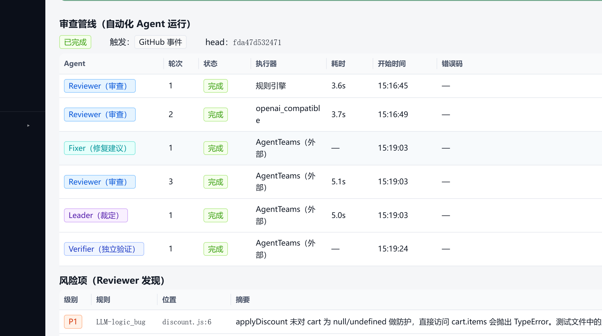
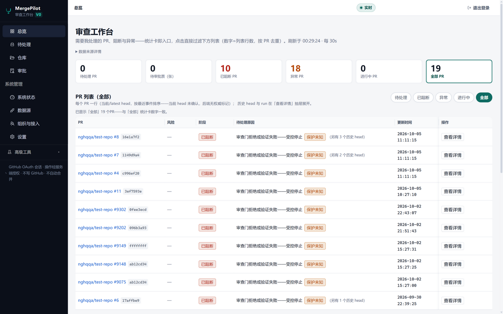
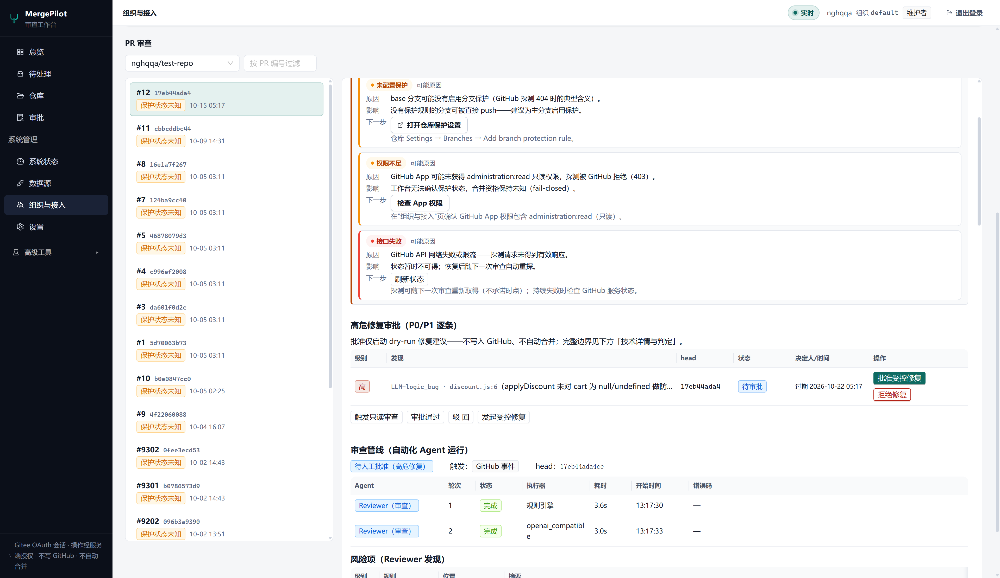
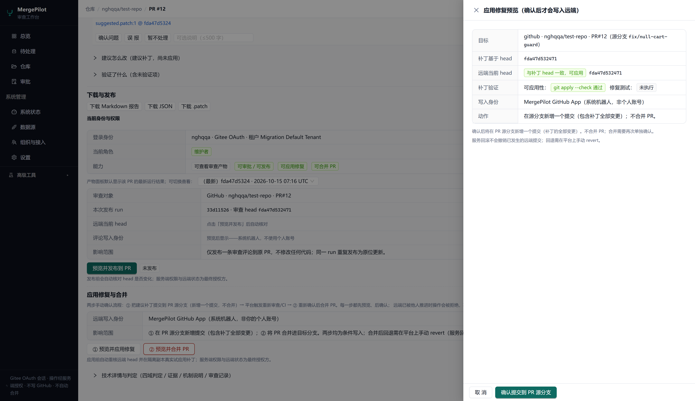
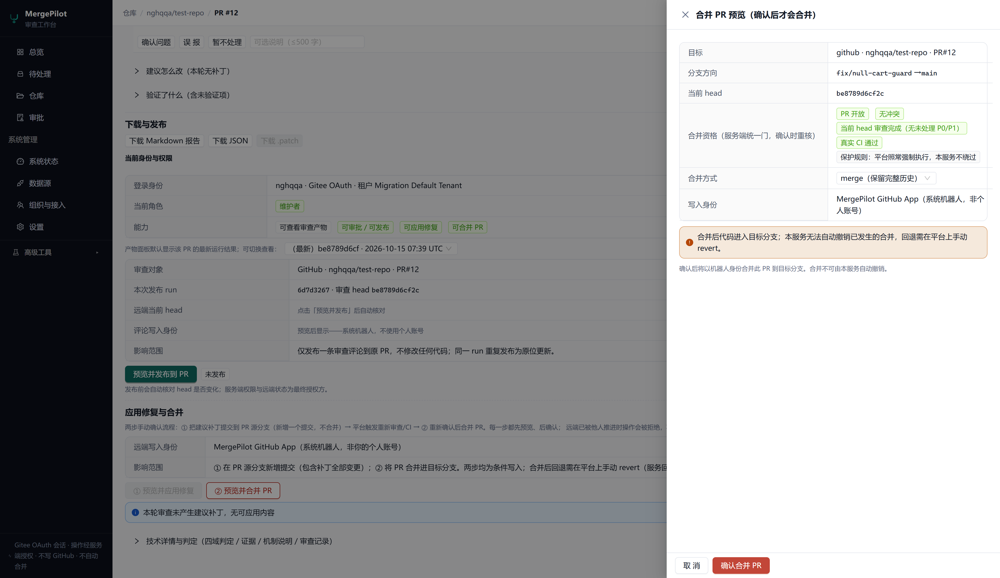

01
多角色审查管线与发现落库
规则引擎、外部模型与 AgentTeams（Fixer / Leader / Verifier）逐轮耗时、执行状态与结构化发现分列留痕，未执行项如实标注。
MergePilot 是自托管的多 Agent PR 审查与受控变更工作台。接入你的 GitHub App 与 Gitee 仓库，将静态规则、外部 LLM 第二阶段与可选本地 RAG 发现汇集到你自己的 Console；评论、机器人提交修复、确认合并三类远端写均经「预览 → 确认」且全程审计留痕。
从 PR 事件入队到维护者确认合并：点击任意截图可查看原始分辨率大图。


规则引擎、外部模型与 AgentTeams（Fixer / Leader / Verifier）逐轮耗时、执行状态与结构化发现分列留痕，未执行项如实标注。

分支保护状态如实探测（未知即 fail-closed）；高危发现逐条生成绑定当前 head 的具名审批票，全批准后才放行修复轮。

确认前强制核对远端当前 head 与补丁摘要一致，并在隔离副本实测 git apply --check 通过，由机器人身份提交修复 commit。

新 commit 推送后旧 head 证据自动失效阻断；仅当前 head 审查完成 + 真实 CI 通过 + mergeable 已知时才开放合并确认。
说明：总览图为 rc.16 测试环境历史数据（账号与组织已打码）；01–04 四宫格为隔离验收实仓 PR #12 端到端实测截图，不代表已产生外部用户真实业务流量。
四个角色不代表四个 LLM，也不代表每个 PR 都执行全部环节；内部 Leader 决定管线状态，维护者决定是否应用与合并。
确定性静态规则 + 可选外部 LLM 第二阶段，产出结构化发现与建议。
在隔离环境生成修复补丁与验证证据；此阶段零远端写入。
独立核验补丁与测试证据，结构强制不读取 Fixer 自述推理。
编排状态流转并由确定性策略保留管线终裁权；远端写归维护者。
面向企业与研发团队引入 AI 参与代码变更时的四个真实难题：状态一致性、防越权控制面、零信任出站治理与不可抵赖审计。
评论、机器人提交修复、确认合并均经 preview → confirm 两步确认，强绑定 expected_remote_head 与补丁摘要；写前持久化候选状态并 DB 原子认领防并发覆盖，超时进入 result_uncertain 经读回对账定案。
租户级出站授权门控（未授权零网络请求）；统一经 Context Builder 实施正则族 + Shannon 熵（>3.5）双通道凭据掩码并 fail-closed；固定指令与不可信数据信封物理隔离，审计仅落哈希清单、零源码副本留存。
GitHub / Gitee Webhook 入队前执行契约预检与 delivery 幂等去重；PostgreSQL CAS 推进与死信队列兜底；Worker→Console 经 Matrix /sync 游标持久化事件流秒级推送结算，支持断线续传与多房间隔离。
Schema v29 核心业务表按 tenant_id 复合外键收窄，撤权后同会话下一请求即 403；平台管理与业务裁定分离——platform_admin 无源码读取及审批/应用/合并权，邀请三层拦截防提权。
抽象规范事件 v1 与上下文完整性三态冻结；合并资格门同时分页核验 GitHub Commit Statuses 与 Check Runs 双面状态——任一读取失败或无 CI 运行均 fail-closed 阻断，绝不降级放行。
官方 Console、pgvector 与 bge-m3 sidecar 全量钉死不可变 OCI Digest；随附 CycloneDX SBOM（48 组件）、SHA256SUMS 与 Trivy 零漏洞/零密钥扫描记录，支持离线 tar 部署与一级回滚。
使用官方钉死不可变 digest 的 deploy/selfhost 模板；首次启动自动建库并经 MU_BOOTSTRAP_ADMIN_SUBJECT 初始化首任管理员。
git clone https://github.com/nghqqa/MergePilot.git
cd MergePilot && git checkout v0.2.0-beta.6-rc.35.6-rc8.5
cd deploy/selfhost
cp .env.example .env && chmod 600 .env
node preflight.mjs # 一键只读预检
docker compose --env-file .env up -d
curl -s http://127.0.0.1:48500/api/health觉得环境变量、OAuth 与反代步骤繁琐？把仓库内置的 INSTALL-WITH-AI.md 指令卡整段发给你的 AI 编码助手（Claude Code / Codex / Cursor 等）：
.env）；